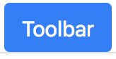
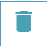
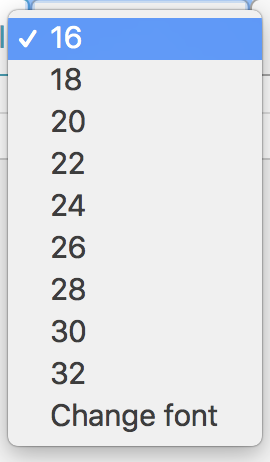
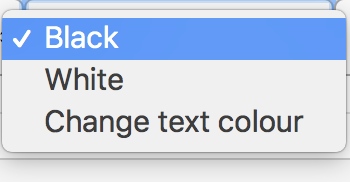
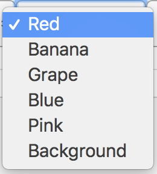
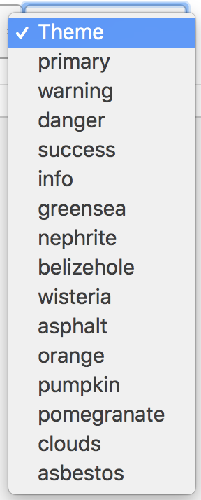

Check out our Q&A here.
It is widely proved that the most important attribute of a mind map is its ability to improve communication and share common practices across an entire group which makes this strategy a useful tool especially in a collaborative environment.
To add a node, you need select a node first and press button under .
To delete a node, you need select a node first and press  button under .
To take a screenshot, you only need to press button under and the screenshot of the map you created will be downloaded automatically to your computer.
To change node text font/size/colour, first you need to select the node, and choose the font/size/colour you want to change to: 
To change the theme, you can choose the theme name here: But node, theme colour cannot be saved permanently.
To invite your group mates to your workspace, you need to ask them to log in with the same identification.